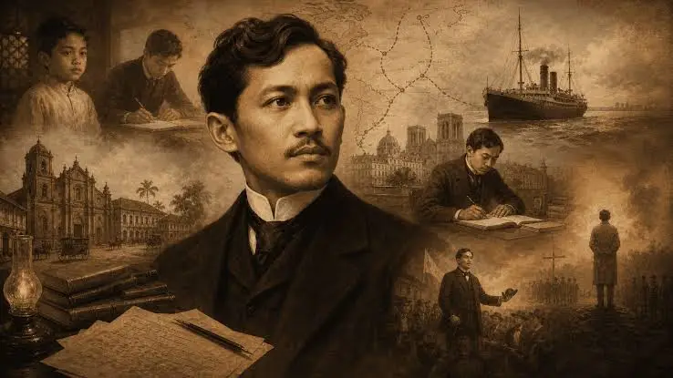

s

Dr. Jose Rizal (1861–1896)
Personal Details
José Protasio Rizal Mercado y Alonso Realonda was born on June 19, 1861,
in Calamba, Laguna, Philippines. He is known as the national hero of the
Philippines. He was a physician, writer, poet, painter, and reformist.
He died on December 30, 1896, in Manila.
- Wrote the novels Noli Me Tangere and El Filibusterismo.
- Became an ophthalmologist and studied medicine in Madrid, Paris, and Heidelberg.
- Spoke and wrote in many languages.
- Founded La Liga Filipina to promote peaceful reform.
- Inspired generations of Filipinos to love their country.
- 1861 – Born in Calamba, Laguna.
- 1887 – Noli Me Tangere is published.
- 1891 – El Filibusterismo is published.
- 1892 – Founds La Liga Filipina.
- 1896 – Executed at Bagumbayan.
Words of Respect
Thank you for your courage, your wisdom, and your love for the
motherland. Your words and sacrifice continue to inspire us to
stand for what is right.